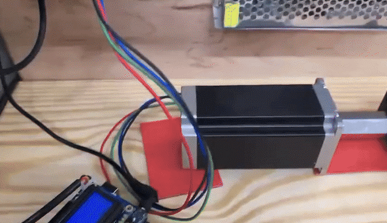

While working at HandyCT, the owner approached me with a problem: his workers were spending too much time measuring wood manually, and even then, human error often led to wasted material and frustration. He asked if I could come up with a solution, so I designed and built an automatic saw gauge to make the process faster and more accurate. The system is controlled by an Arduino Uno R3, which receives input through a 3x4 matrix keypad. Workers can simply type in the desired length, and the device uses a DM556T digital stepper driver to control a stepper motor, which moves a mechanical stop along a 40-inch bolt acting as a lead screw. Once in position, the worker can place the wood against the stop and cut, no measuring tape needed. I built the control panel with a laser cut faceplate, housed it in a 3D-printed case, and mounted the components on a perf board. A 12V power supply powers the system, and a few buttons and relays handle direction, enabling, and system resets. The LCD screen displays position and user prompts, making it intuitive to use even for someone with no electronics background. This project blended practical engineering with real workplace needs and showed me how meaningful even small innovations can be when they solve real problems. It was also a great lesson in turning an idea into a working tool and seeing people actually use and rely on it. NOTE: Yes it's wobbly, but when you combine it with a 2 x 4 x 16' Construction/Framing Lumber wood, it isn't so wobbly anymore.